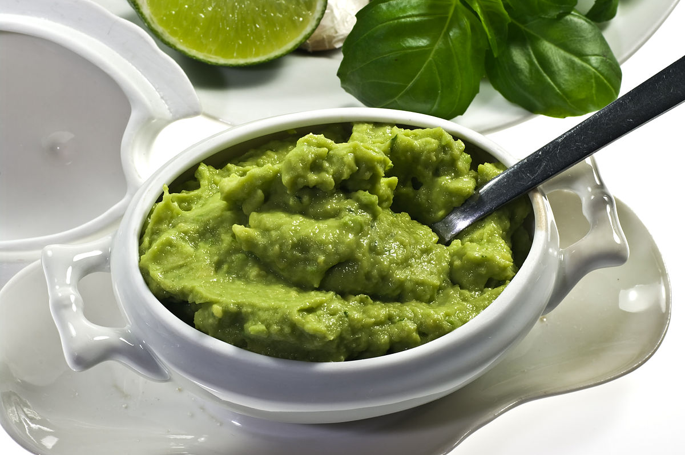
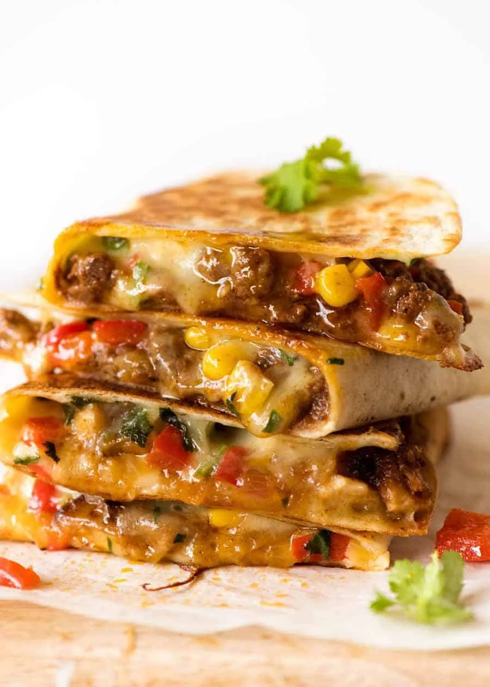
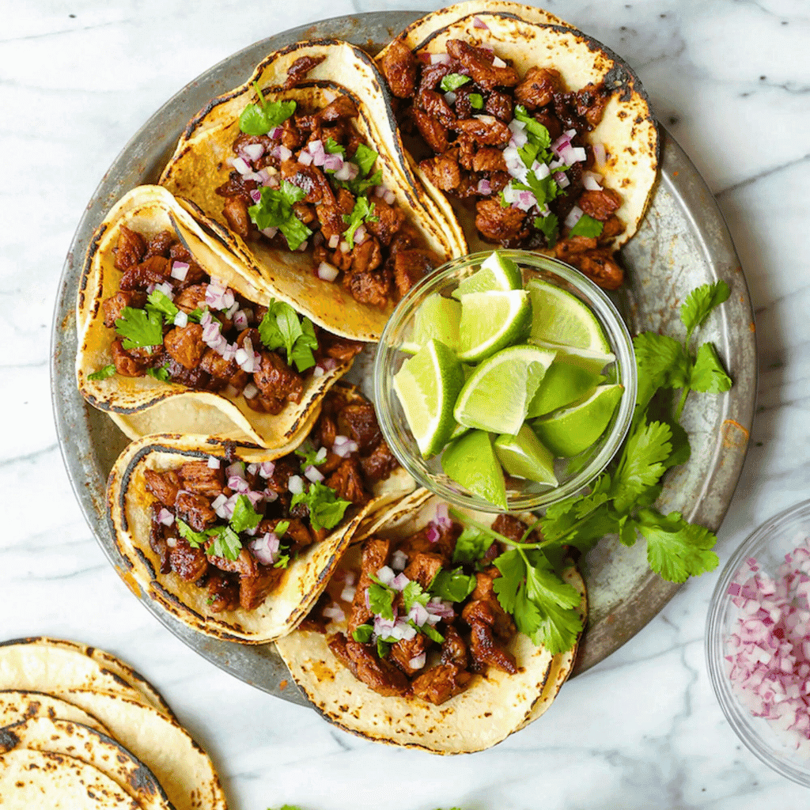

Una Fiesta en Cada Mordida!!
Ceviche (Peruvian Seafood Dish)

Cut the fish into small cubes and place in a bowl. Pour the lime juice over the fish. Add sliced onions and chili peppers. Let it marinate in the refrigerator for 20-30 minutes until the fish turns opaque. Add chopped cilantro and salt to taste. Mix gently. Plate the ceviche with sweet potatoes and corn on the side. Serve immediately.
Ingredients:
Main Ingredients:
Recipe:
Guacamole (Mexican Avocado Dip)

Cut the avocados in half, remove the pits, and scoop the flesh into a bowl. Mash to your desired consistency. Add chopped onion, tomatoes, chili peppers, lime juice, cilantro, and salt. Stir gently to combine. Taste and adjust salt or lime juice as needed. Serve immediately with tortilla chips or as a side to Mexican dishes.
Ingredients:
Main Ingredients:
Recipe:
Quesadillas (Mexican Grilled Cheese Dish)

In a bowl, mix shredded cheese with cooked chicken, beef, or vegetables if using. Add chopped cilantro. Lay a tortilla flat and spread the cheese mixture evenly on half of it. Fold the tortilla in half. Heat a skillet over medium heat and lightly grease with butter or oil. Place the folded tortilla in the skillet and cook for 2-3 minutes per side until golden brown and the cheese is melted. Cut into wedges and serve hot with salsa, guacamole, or sour cream.
Ingredients:
Main Ingredients:
Recipe:
Mexican Tacos

In a skillet, cook ground beef or chicken over medium heat until browned. Add onion, garlic, cumin, and chili powder. Cook for 5 more minutes. Heat tortillas on a dry skillet for a few seconds on each side or in a microwave. Place a spoonful of cooked meat in the center of each tortilla. Add lettuce, tomatoes, and cheese on top. Serve immediately with sour cream and sa
Ingredients:
Main Ingredients:
Recipe: